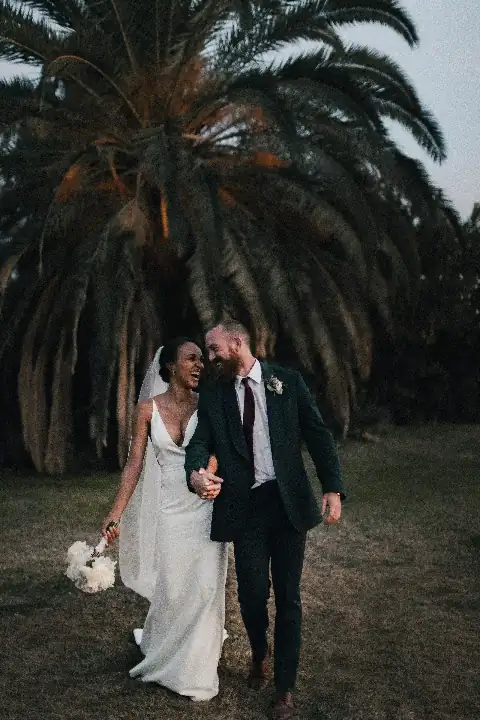
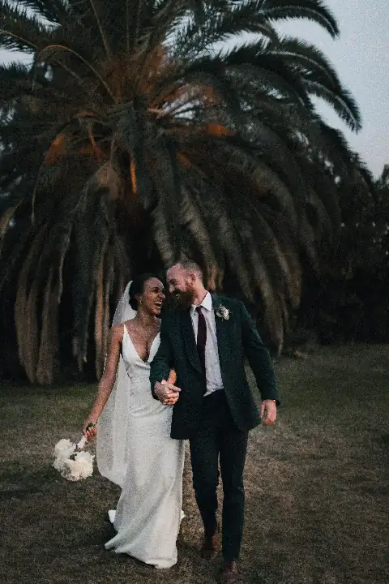

Shooting photo
Pour capturer vos moments les plus précieux et garder un souvenir impérissable. Je me déplace en région bordelaise pour réaliser vos photos
Nous passons notre vie à chercher le bonheur, et lorsque nous y touchons, nous n'avons qu'une envie : le figer au travers de photographies pour le savourer avec les personnes qui sont importantes à nos yeux, ou le partager au plus grand nombre. C'est ce que je vous propose : saisir ces merveilleux moments au travers de mon regard, mon approche, ma technique. Rendre ces moments immortels, afin que vous puissiez y puiser de l'amour, du bonheur, de la tendresse et de lumière à chaque fois que vous poserez les yeux sur vos photos.
 

Un portrait n'est pas une ressemblance. Dès lors qu'une émotion ou qu'un fait est traduit en photo, il cesse d'être un fait pour devenir une opinion. L'inexactitude n'existe pas en photographie. Toutes les photos sont exactes. Aucune d'elles n'est la vérité.
Pour capturer vos moments les plus précieux et garder un souvenir impérissable. Je me déplace en région bordelaise pour réaliser vos photos
Vous souhaitez retoucher vos photos pour un résultat professionnel ? Bénéficier d'un rendu optimal pour vos publications
Partagez avec vos proches et vos clients les photos des moments partagés ensemble à travers un album photo personnalisé
De manière inconsciente, je crois, je guette un regard, une expression, des traits ou une nostalgie capable de résumer ou plus exactement de révéler une vie
N'hésitez pas à m'écrire ! Je vous répondrais en moins de 24 heures